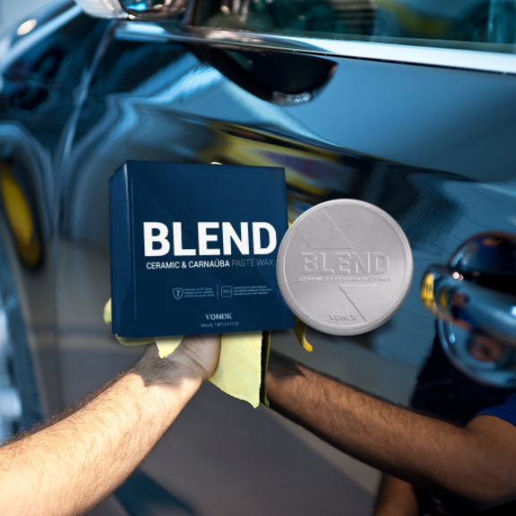
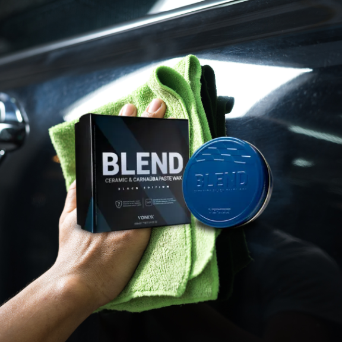
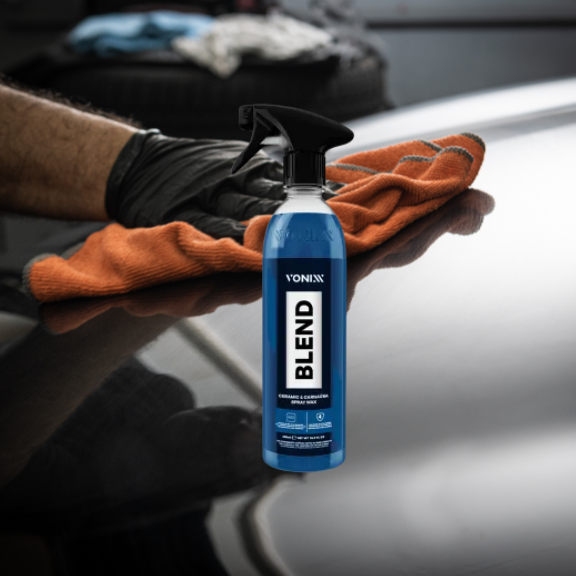
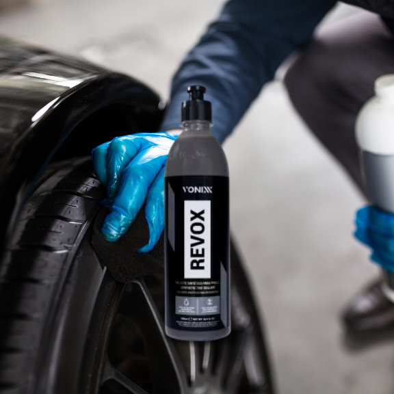
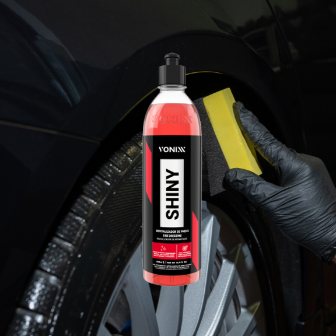
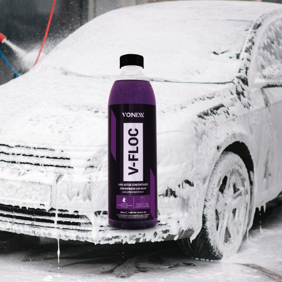
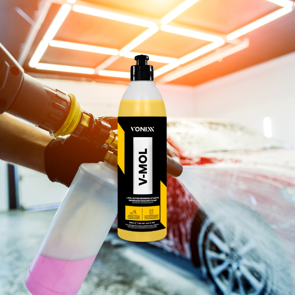

-
Blend Paste, Cera com Carnaúba e Sio2
Blend Ceramic e Carnaúba Paste Wax é uma cera híbrida composta por Sio2 e pela mais pura carnaúba tipo 1, protege a superfície veicular por até sete meses. O produto promove a resistência cerâmica, brilho quente da carnaúba e hidrorrepelência.
BRILHO 5-5 / PROTEÇÃO 5-5 -
Blend Pasta Black, Cera com Carnaúba e Sio2
Blend Ceramic e Carnaúba Paste Wax é uma cera híbrida composta por Sio2 e pela mais pura carnaúba tipo 1, protege a superfície veicular por até sete meses. O produto é ideal para pinturas escuras e promove resistência cerâmica, brilho quente da carnaúba e hidrorrepelência.
BRILHO 5-5 / PROTEÇÃO 5-5 -
Blend Ceramic Spray, Cera spray com Carnaúba e Sio2
Blend Ceramic Spray e Carnaúba Paste Wax é uma cera híbrica composta por Sio2 e pela mais pura carnaúba tipo 1, protege a superfície veicular por até 4 meses. O produto é ideal para pinturas escuras e promove resistência cerâmica, brilho quente da carnaúba e hidrorrepelência.
BRILHO 4-5 / PROTEÇÃO 4-5 -
Revox, Selante de Pneu
Revox é um selante sintético para pneus, formulado para proteger, dar brilho e renovar o seu aspecto, além de promover total hidrorrepelência. Sua fórmula exclusiva é livre de solventes, ecologicamente correta e não inflamável. Revox é extremamente resistente à lama e chuva, deixando o pneu limpo por mais tempo.
BRILHO 3-5 / PROTEÇÃO 4-5 -
Shiny, Selante de Pneu
Shiny é um produto desenvolvido exclusivamente para uso em pneus que renova, protege e dá brilho intenso e duradouro aos pneus. O produto não sai ao entrar em contato com a água, podendo alcançar durabilidade de até 60 dias, rende de 15 a 20 aplicações em carros pequenos emantendo o aspecto no pneu de brilho molhado.
BRILHO 5-5 / PROTEÇÃO 5-5 -
V-floc, Shampoo Automotivo Neutro
V-Floc é um lava autos de alta performance e de pH neutro. Sua fórmula contém agentes condicionadores e tensoativos especiais que proporcionam uma lavagem suave e eficiente. V-Floc tem alto grau de lubrificação, promovendo redução significativa do coeficiente de atrito, proporcionando um melhor deslize da luva microfibra e reduzindo de forma efetiva as chances de microrriscos na pintura. V-Floc também promove brilho e aspecto de renovação da pintura.
LIMPEZA 3-5 -
V-Mol, Shampoo Automotivo Desincrustrante
V-MOL é um lava autos biodegradável com pH levemente básico que não agride a superfície. Ideal para lavagem de automóveis, em especial para remoção de sujeiras mais difícieis, como remoção de barro e óleo.
LIMPEZA 4-5